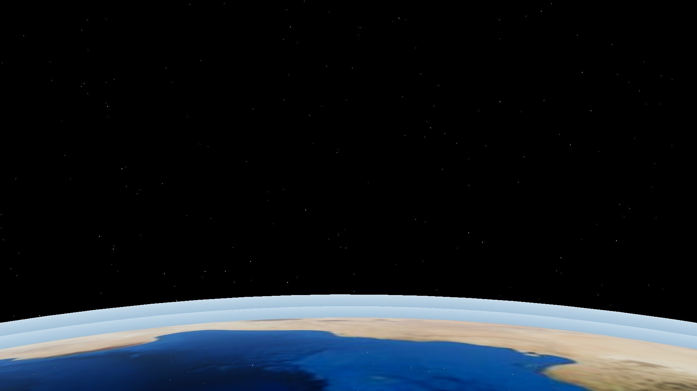
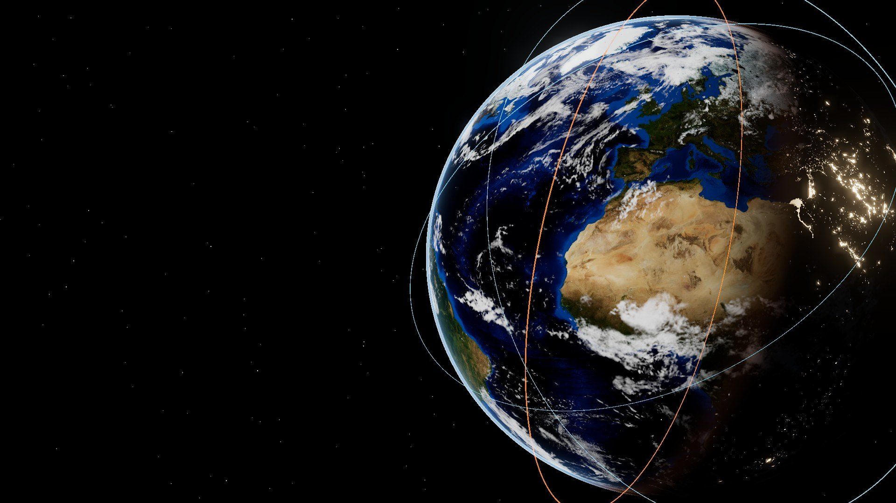
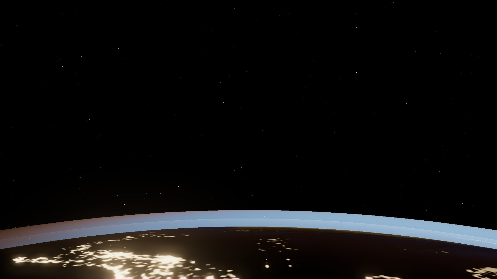
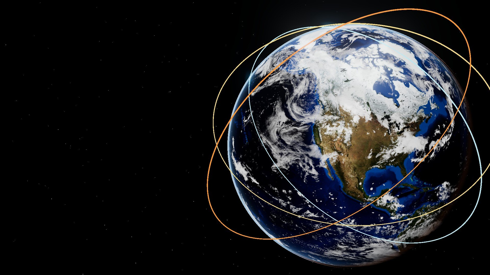
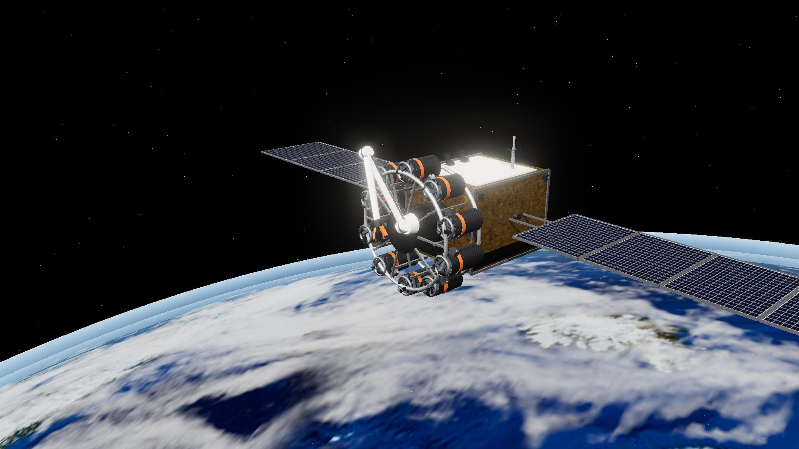
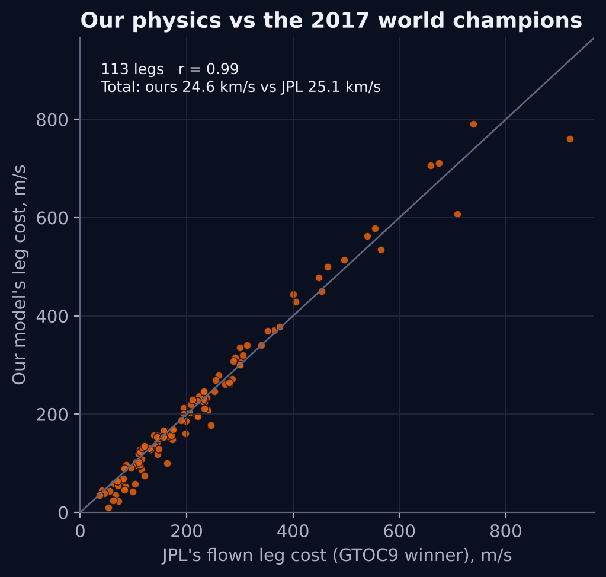
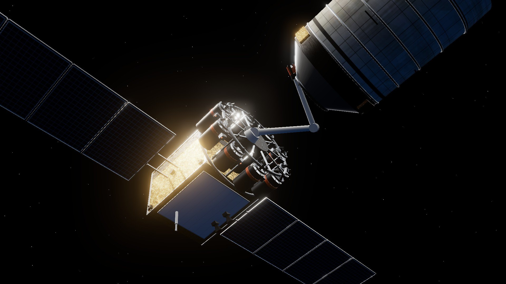

DECA Innovation Plan · 2026–27
Low Earth orbit · 2026
The garbage truck for space.
One spacecraft. Ten pickups per trip. Earth does the steering.
Innovation Plan
Cleaning up space junk ten pieces at a time, priced like a garbage route.
[headshot]
Brandon Graff
Founder & Chief Executive Officer
[School name]
[Street address] · [City, State ZIP]
[Presentation date]
DECA Innovation Plan (EIP) · 2026–27
2

Contents
I
Overview
The idea on one page
04
II
Business Opportunity
Space has a trash problem
05
III
Customer Segments
Who pays to clean it up
08
IV
Unique Value Proposition
One trip, ten pickups
10
V
Solution
How it works, proof and the money
12
VI
Conclusion
What we're asking for
18
VII
Bibliography
Our sources
19
VIII
Appendix
Assumptions behind the numbers
20
Orbital Curbside
3

I · Overview
The problem
Dead satellites and old rocket parts are piling up around Earth, and every crash makes more junk.
Our fix
One spacecraft picks up 10 pieces per trip, like a garbage truck on its route.
Who pays
Space agencies first, then satellite companies and insurers. A fixed fee per piece removed.
The price
$12.2M
per piece in our model, launch included. Today: $40–93M.
Price is our model's estimate (base assumptions, appendix)
4
II · Business Opportunity · What's up there
47,000
objects big enough to track are circling Earth
16,000
of them still work. The rest is junk.
27,000 km/h
how fast they travel (about 17,000 mph)
Picture a highway where two of every three cars are abandoned wrecks, still moving at full speed.
Every dot is a real object · blue: working · orange: junk
ESA DISCOSweb statistics (Oct 2026) · CelesTrak catalogue, 16 Oct 2026 · speed = orbital speed at 400–1,000 km
5
II · Business Opportunity · Why it matters
2009
A dead Russian satellite smashed into a working US one (Iridium 33). It created about 2,200 new pieces of tracked junk.
41×
times the International Space Station has had to move out of the way of junk since 1999. People live on board.
Chain reaction
Crashes now make new pieces faster than old ones fall. ESA says the junk keeps growing even if we stopped launching.
WHAT'S AT STAKE the satellites behind GPS maps, weather forecasts, TV and internet.
CelesTrak, Iridium 33/Cosmos 2251 collision · NASA Orbital Debris Quarterly News 29(3) · ESA Space Environment Report 2026
6
II · Business Opportunity · Why it isn't fixed
Every cleanup today is a custom mission for one or two objects. That's like hiring a whole garbage truck for every trash bag.
| WHO PAID | PIECES | PRICE |
|---|---|---|
| Europe (ESA), 2020 | 1 | €86M |
| Japan (JAXA), 2024 | 1 | ≈$82M |
| UK Space Agency, Oct 2026 | 2 | ≈$80M |
| US Space Development Agency, 2026 | 1 + options | $52.5M |
And the rules just got stricter
5 years
New US rule: dead satellites must come down within 5 years.
1 in 10
Satellites allowed to fail at disposal. Some will always need a pickup.
$1.1–1.6B
Analysts' estimate of the debris market in 2025.
ESA; Astroscale; UK Government; Starfish Space · FCC 22-74 (2022), FCC 26-47 (2026) · Mordor Intelligence, ResearchAndMarkets
7
III · Customer Segments
1
Space agencies
ESA · Japan · UK · US
Why they care
Their old rockets are up there, and they already pay for cleanup.
How they buy
Contracts, paid at milestones.
2
Satellite companies
Iridium · OneWeb · Planet
Why they care
Must bring dead satellites down within 5 years. Some will fail.
How they buy
A fixed fee per satellite removed.
3
Insurers
Space underwriters
Why they care
They pay out when satellites are lost or hit.
How they buy
Removal bundled with policies, once it's proven.
“I expect the cost is really in the millions or tens of millions, at which price I know it doesn't make sense.” — Matt Desch, CEO of Iridium (2019), on removing its dead satellites
Numbered by who pays first · Quote: C. Henry, SpaceNews, 30 Dec 2019
8
III · Customer Segments · Our first customers
4
India
4
France
2
USA
Where the cheap rockets go
Shared SpaceX launches drop satellites right in their orbit band, so our first pickup is 80 days after launch.
No permission problem
Their owners' own space agencies already pay for cleanup.
The bigger prize, later
142 Soviet-era stages. Russia must agree, and getting there takes a year, so about $13M each.
Our analysis of the CelesTrak catalogue, 16 Oct 2026 · Outer Space Treaty (1967), Art. VIII
9
IV · Unique Value Proposition
Today
One custom mission per piece
$40–93M
per piece
Orbital Curbside
One truck, one route, ten stops
$12.2M
per piece, our model
Our promise: space cleanup priced like a garbage route. A fixed fee per piece, paid when it's confirmed coming down.
Our figure: model estimate with launch included, base assumptions (appendix) · Today's prices: slide 7
10

IV · Unique Value Proposition · The secret
Every orbit slowly swings around Earth, like the hand of a clock. Lower orbits swing faster, because Earth bulges at the equator.
So the truck parks a little higher or lower than its next target and waits until the two line up, like clock hands meeting.
Turn with fuel
1,094 kg
of propellant
Wait a year
19 kg
of propellant
Fuel to close a 19° gap between two orbits, our model · J2 nodal precession (Vallado, 2013)
11
V · Solution · How it works
Renders from our 3D concept model, sized by our math. Not a flight design.
12

V · Solution · Meet the truck
Electric engines
Run on xenon gas; about 5× more fuel-efficient than chemical rockets.
Robot arm
Holds each old rocket steady while a kit is attached.
10 rocket kits
One per pickup. Each sends one piece down to burn up.
Solar wings
Turn sunlight into power for the engines.
Weight at launch
1,650 kg
■ Kits ×10 852 kg
■ Truck 600 kg
■ Xenon 198 kg
Concept sized from our model (first route). Not a flight design. Thruster class: Busek BHT-1500.
13
V · Solution · Proof the math works
In 2017, the European Space Agency held a contest to plan routes like ours. NASA's Jet Propulsion Laboratory (JPL) won and published every move.
2.2%
Our fuel totals vs JPL across all 113 of their moves
0.06°
Our orbit predictions vs the model used to track real satellites (SGP4)

Each dot is one move from JPL's winning solution, recomputed by our model. On the line = perfect match.
Petropoulos et al. (2018), GTOC9 JPL results · Vallado et al. (2006), SGP4 · 0.30° on our first route
14

V · Solution · Live demo
10
old stages removed
490
days, launch to last stop
198 kg
of xenon fuel
Real orbits from the 16 Oct 2026 catalogue. Runs offline in a browser.
Simulation: our route planner + SGP4 (satellite.js) · 3D truck: concept model
15
V · Solution · The money
Today's missions
public contracts, 1–2 pieces each
$40–93M
Our truck, 1 pickup
sanity check: matches today
$97M
Our truck, 10 pickups
our first route
$12.2M
Reused truck
new kits sent up; ~50 pickups over ~6 years
$5.2M
Cost per piece removed, launch included. 80% of 20,000 simulated cases land between $11.2M and $15.4M. Biggest unknown: what the truck itself costs ($50–115M).
Our model; inputs from NASA OTPS (2023), SpaceX rideshare prices, Busek · assumptions in appendix
16
V · Solution · Risks and roadmap
Grabbing it
Nobody has grabbed a tumbling old rocket yet. Japan plans to try in 2027–28; we'll partner with whoever proves it.
Cost
Truck and kit prices are estimates. I'm testing them with experts.
Permission
Every object belongs to its country. Our first route uses US, Indian and French stages.
Falling pieces
Heavy objects are steered to burn up over the open ocean.
2026–27
Talk to customers and experts; sharpen the model
2027–28
Sign a partner for the arm and spacecraft
2028–29
Small test trip: 2–3 pickups
2029+
First 10-pickup truck
Outer Space Treaty (1967), Art. VIII · Astroscale ADRAS-J2 · dates after 2027 are targets
17
VI · Conclusion
1
Space junk is growing, and every crash makes more.
2
Cleanup costs $40–93M per piece today. Our route: about $12M, launch included.
3
Earth does the steering, and the math is checked against NASA JPL.
The ask
[$__] in pre-seed funding for 12 months: finish customer interviews, design the rocket kit, and sign a test-trip partner.
Scan to fly the route
Orbital Curbside
18
VII · Bibliography
ESA Space Debris Office. Space Environment Statistics (DISCOSweb), Oct 2026; Space Environment Report 2026.
Kessler, D. J., & Cour-Palais, B. G. (1978). Collision frequency of artificial satellites. J. Geophys. Res., 83(A6).
McKnight, D., et al. (2021). Identifying the 50 statistically-most-concerning derelict objects in LEO. Acta Astronautica, 181.
CelesTrak. Iridium 33 / Cosmos 2251 collision (2009). celestrak.org/events/collision
NASA Orbital Debris Program Office. Orbital Debris Quarterly News, 29(3): ISS debris avoidance maneuvers.
FCC. FCC 22-74 (2022); FCC 26-47 (22 Jul 2026).
ESA (2020); Astroscale (2024); UK Government (15 Oct 2026); Starfish Space (Jan 2026): removal contract announcements.
Colvin, T. J., Karcz, J., & Wusk, G. (2023). Cost and Benefit Analysis of Orbital Debris Remediation. NASA OTPS.
Henry, C. (2019, Dec 30). Iridium would pay to deorbit its defunct satellites. SpaceNews.
Mordor Intelligence; ResearchAndMarkets; The Business Research Company. Space debris market reports (2025).
United Nations (1967). Outer Space Treaty, Article VIII.
SpaceX rideshare prices (2026–27); Light Reading (16 Oct 2026); Spaceflight Now (24 Feb 2026).
Izzo, D. (2017). GTOC9: The Kessler Run. ESA. doi:10.5281/zenodo.570193
Petropoulos, A., et al. (2018). GTOC9: Results from the Jet Propulsion Laboratory. Acta Futura, 11.
Di Carlo, M., Romero Martin, J. M., & Vasile, M. (2017). Low-thrust active removal in LEO. Adv. Space Res., 59(5).
Iskender, O. B., Felicetti, L., et al. (2026). Drift-aware multi-target space tug logistics. arXiv:2607.22974.
Barea, A., Urrutxua, H., & Cadarso, L. (2020). Multi-target ADR selection and planning. Acta Astronautica.
Borelli, G., & Colombo, C. (2026). Space debris index for multi-purpose ADR. Adv. Space Res., 77.
Kelso, T. S. CelesTrak GP data and SATCAT (16 Oct 2026). McDowell, J. C. GCAT (15 Oct 2026).
Vallado, D. A., et al. (2006). Revisiting Spacetrack Report #3 (SGP4). AIAA 2006-6753.
Vallado, D. A. (2013). Fundamentals of Astrodynamics and Applications (4th ed.).
Edelbaum, T. N. (1961). Propulsion requirements for controllable satellites. ARS Journal, 31(8).
Busek Co. BHT-1500 Hall thruster datasheet (accessed Oct 2026).
Earth imagery: NASA Visible Earth / Earth Observatory (Blue Marble, Black Marble, clouds). Renders: our own.
Full list with links: written paper, references [1]–[28]
19
VIII · Appendix · Assumptions behind the numbers
| INPUT | LOW · BASE · HIGH | SOURCE |
|---|---|---|
| Truck hardware | $50 · 80 · 115M | NASA OTPS (2023); base = assumption |
| Rocket kit, each | $0.5 · 1.5 · 3.0M | Assumption: no public price |
| Launch | $7.0 · 7.5 · 15k/kg | SpaceX rideshare to 550 km; truck climbs |
| Xenon | $2.8 · 2.8 · 12k/kg | Market reports (2024–26) |
| Operations | $3 · 5 · 10M/yr | Assumption |
| Insurance | 5 · 8 · 12% | Assumption, of hardware + launch |
| Fuel margin | 10 · 10 · 25% | Our JPL and SGP4 checks |
| Truck | 600 kg dry; Hall thrusters, Isp 1,710 s; 10 days per stop | |
| Kits | Solid motor, Isp 285 s; lowers orbit to 250 km; ≈85 kg each (first route) | |
What moves the price most
Cost per piece if one input goes from low to high, others at base ($12.2M):
Truck hardware
$9.0
$16.0
Kit price
$11.2
$13.7
Launch price
$12.1
$13.6
Operations
$12.0
$12.9
Insurance
$11.9
$12.6
Xenon price
$12.2
$12.4
Truck cost matters most. Fuel barely matters.
Base case: first route, 10 pickups, 490 days from launch, launch included. Sources in paper.
20